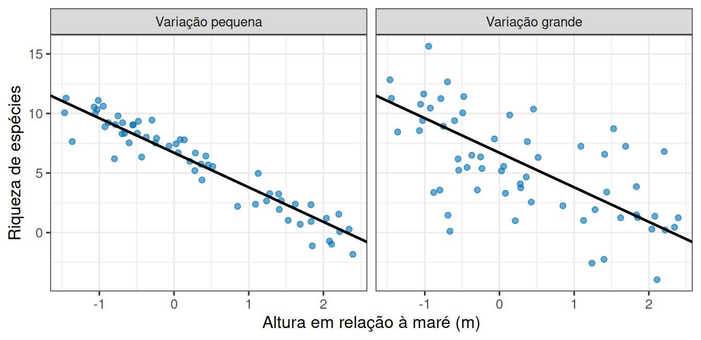
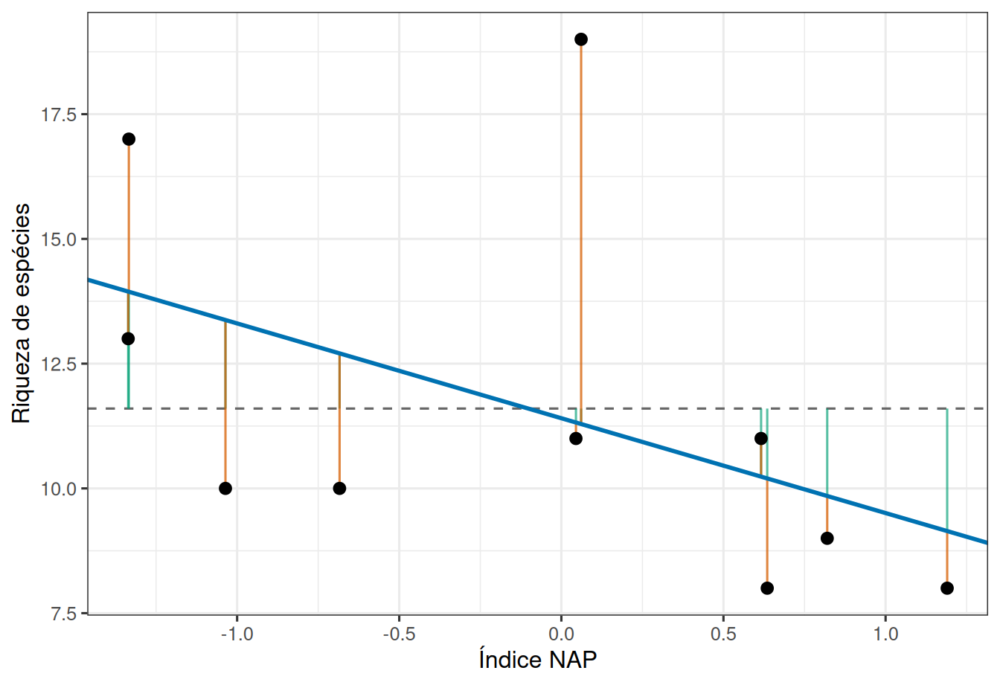
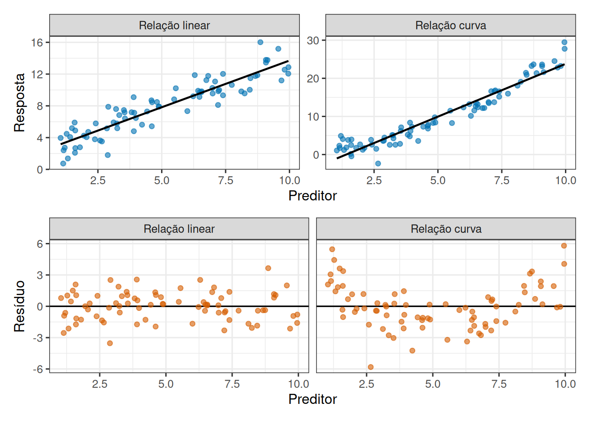
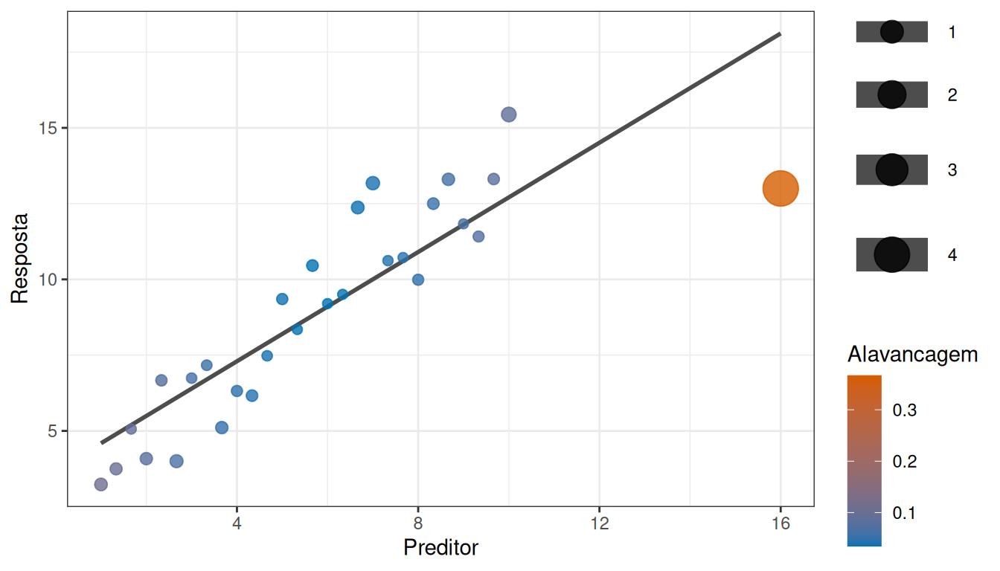
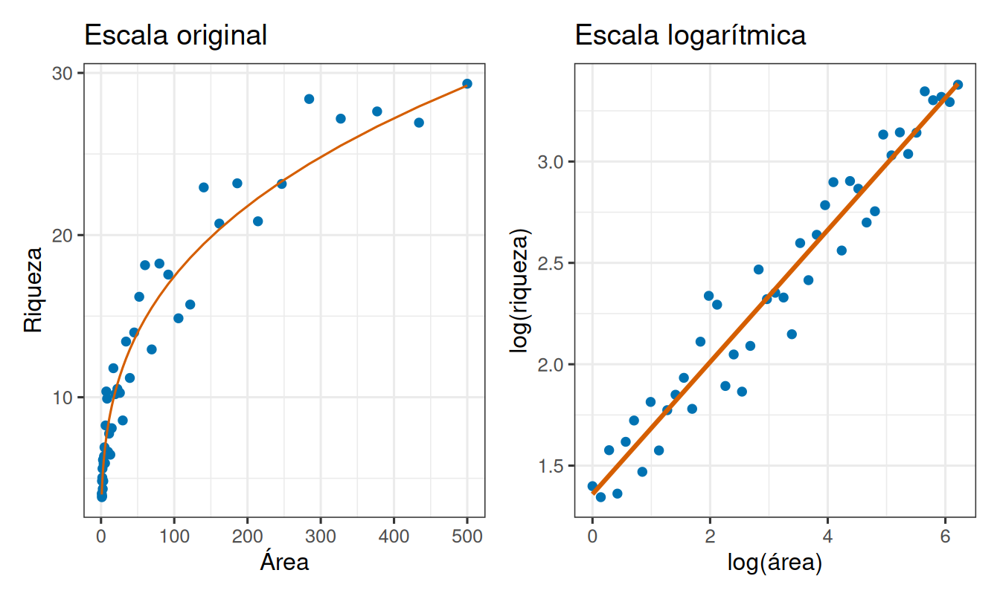
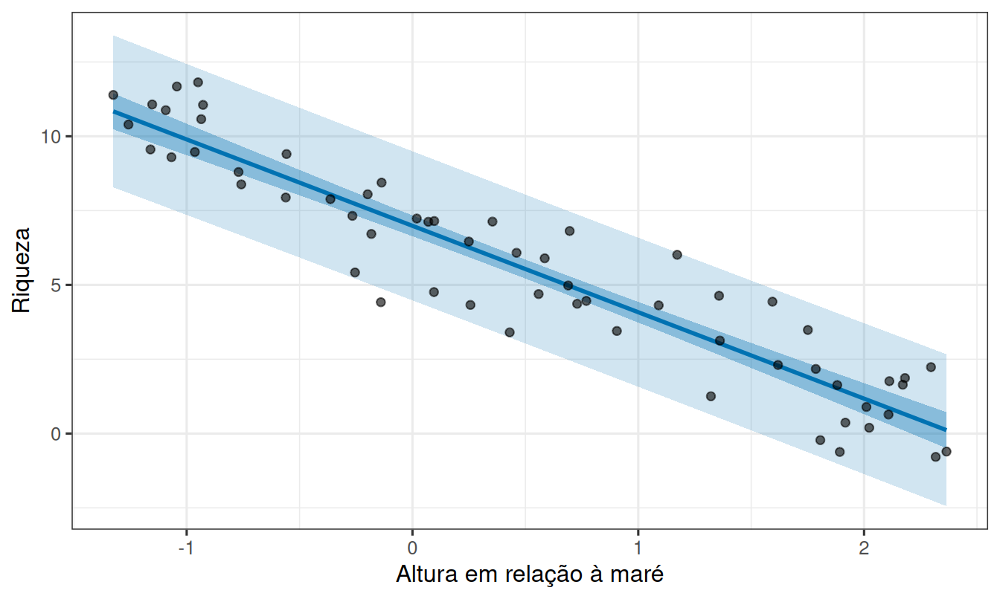

Uma reta como processo gerador
Leitura prévia
1 Quando o preditor não tem níveis
Até aqui as comparações envolviam categorias, como duas dietas, quatro concentrações ou dois substratos. Mas muitas perguntas nas Ciências do Mar não têm essa forma.
A riqueza de espécies diminui conforme a altura da estação em relação à maré?
Aqui não há grupos. A altura é uma medida contínua, de modo que cada estação tem o seu valor e não existem “níveis de altura” a comparar. Precisamos de uma descrição que funcione para qualquer valor do preditor.
2 A reta como processo gerador
2.1 Uma reta descreve o centro, não as observações
O ponto de partida é escrever como a resposta esperada muda com o preditor:
\[\text{riqueza esperada} = \beta_0 + \beta_1 \times \text{altura}\]
Os dois números têm significado concreto.
O intercepto \(\beta_0\) é a riqueza esperada quando a altura vale zero. Ele só é interpretável se o valor zero fizer sentido e estiver dentro da faixa observada.
A inclinação \(\beta_1\) é o que realmente responde à pergunta, ou seja, quanto a riqueza esperada muda quando a altura aumenta em uma unidade. Seu sinal indica a direção, seu valor indica a magnitude, e sua unidade é a da resposta dividida pela do preditor, espécies por metro, por exemplo.
2.2 As duas partes do processo
Se a reta descrevesse tudo, todas as estações com a mesma altura teriam exatamente a mesma riqueza. Não é o que acontece. Falta a segunda metade do processo:
\[\text{riqueza} = \underbrace{\beta_0 + \beta_1 \times \text{altura}}_{\text{parte sistemática}} + \underbrace{\varepsilon}_{\text{variação ao redor}}\]
A parte sistemática diz onde está o centro para cada altura. O termo \(\varepsilon\) representa tudo o que faz uma estação específica ficar acima ou abaixo desse centro.
Escrever o modelo assim permite gerar dados, escolhendo valores de altura, calculando o centro para cada um e sorteando um desvio em torno dele. É o que torna a regressão um modelo generativo, e não apenas uma linha traçada sobre pontos. A Figura 1 usa esse procedimento duas vezes, com a mesma reta e magnitudes diferentes de \(\varepsilon\).
Os dois painéis da Figura 1 vêm da mesma reta. A relação sistemática é idêntica, e o que muda é o quanto as observações se afastam dela. À esquerda a relação salta aos olhos, enquanto à direita ela existe, mas exige mais dados para ser estimada com precisão.
Guarde isso, uma inclinação forte e uma relação aparentemente forte não são a mesma coisa.
3 Da reta verdadeira à reta estimada
No mundo real, \(\beta_0\) e \(\beta_1\) são desconhecidos. Temos apenas as estações medidas, e a partir delas estimamos uma reta.
O critério mais usado é o dos mínimos quadrados, que escolhe, entre todas as retas possíveis, a que torna mínima a soma dos quadrados das distâncias verticais entre cada ponto e a reta.
Essas distâncias são os resíduos, isto é, o que sobrou depois de descontar a parte explicada pela altura. Elevá-las ao quadrado faz com que desvios grandes pesem desproporcionalmente, o que também significa que um único ponto muito afastado pode puxar a reta inteira.
Esse critério tem solução analítica. Para observações \((x_i,y_i)\), as estimativas de mínimos quadrados são
\[ \hat\beta_1= \frac{\sum_i(x_i-\bar{x})(y_i-\bar{y})} {\sum_i(x_i-\bar{x})^2} =\frac{s_{XY}}{s_X^2} \]
e
\[ \hat\beta_0=\bar{y}-\hat\beta_1\bar{x}. \]
A inclinação é a covariância entre \(X\) e \(Y\) dividida pela variância de \(X\). A segunda equação garante que a reta estimada passe por \((\bar{x},\bar{y})\), o centro da nuvem de pontos. Cada valor ajustado é \(\hat y_i=\hat\beta_0+\hat\beta_1x_i\) e cada resíduo é \(e_i=y_i-\hat y_i\).
A presença da covariância no numerador aproxima a regressão de outra medida conhecida. A correlação de Pearson é
\[ r=\frac{s_{XY}}{s_Xs_Y}, \]
e varia de -1 a 1. As duas quantidades compartilham o mesmo numerador, mas descrevem coisas diferentes. Covariância e correlação são simétricas, pois trocar \(X\) e \(Y\) não muda seu sentido, enquanto a regressão não é. Escolher \(Y\) como resposta define quais distâncias são minimizadas e qual variável será prevista. Vale acrescentar que correlação alta não demonstra causalidade, pois uma terceira variável, uma tendência temporal ou a seleção das unidades pode produzir a associação.
No R, todo esse procedimento cabe em uma função:
Ver o ajuste da reta em R
dados_precisos <- tibble(altura = runif(60, -1.5, 2.5)) |>
mutate(riqueza = 6.7 - 2.9 * altura + rnorm(60, 0, 1))
ajuste_reta <- lm(riqueza ~ altura, data = dados_precisos)
summary(ajuste_reta)
Call:
lm(formula = riqueza ~ altura, data = dados_precisos)
Residuals:
Min 1Q Median 3Q Max
-2.01385 -0.67680 -0.05096 0.74612 1.94142
Coefficients:
Estimate Std. Error t value Pr(>|t|)
(Intercept) 6.7529 0.1441 46.85 <2e-16 ***
altura -2.7756 0.1095 -25.34 <2e-16 ***
---
Signif. codes: 0 '***' 0.001 '**' 0.01 '*' 0.05 '.' 0.1 ' ' 1
Residual standard error: 0.9899 on 58 degrees of freedom
Multiple R-squared: 0.9171, Adjusted R-squared: 0.9157
F-statistic: 642 on 1 and 58 DF, p-value: < 2.2e-16Ver o ajuste da reta em R
confint(ajuste_reta) 2.5 % 97.5 %
(Intercept) 6.464446 7.041448
altura -2.994877 -2.556321lm() estima os coeficientes, summary() informa erros padrão, testes e \(R^2\), e confint() fornece intervalos para os parâmetros. Como os dados foram gerados com intercepto 6,7 e inclinação -2,9, as estimativas devem ficar próximas desses valores, e os intervalos de confiança quase sempre os contêm.
3.1 Um cálculo aplicado, do ponto à reta
Vale executar as fórmulas uma vez, sem lm(), para acompanhar cada parcela. Considere dez estações do conjunto RIKZ, com riqueza da macrofauna praial e o índice NAP de exposição às ondas, coletadas na costa da Holanda (Zuur et al. 2009). Valores menores de NAP representam estações mais expostas.
Ver o cálculo dos coeficientes e da partição
rikz <- tibble(
riqueza = c(11, 10, 13, 11, 10, 8, 9, 8, 19, 17),
nap = c(0.045, -1.036, -1.336, 0.616, -0.684,
1.190, 0.820, 0.635, 0.061, -1.334)
)
x_c <- rikz$nap - mean(rikz$nap)
y_c <- rikz$riqueza - mean(rikz$riqueza)
b1 <- sum(x_c * y_c) / sum(x_c^2)
b0 <- mean(rikz$riqueza) - b1 * mean(rikz$nap)
rikz_calculo <- rikz |>
mutate(
ajustado = b0 + b1 * nap,
residuo = riqueza - ajustado,
media = mean(riqueza)
)
sq_total <- sum((rikz_calculo$riqueza - rikz_calculo$media)^2)
sq_reg <- sum((rikz_calculo$ajustado - rikz_calculo$media)^2)
sq_res <- sum(rikz_calculo$residuo^2)
tibble(
intercepto = b0,
inclinacao = b1,
SQ_total = sq_total,
SQ_regressao = sq_reg,
SQ_residuo = sq_res,
R2 = sq_reg / sq_total,
correlacao = cor(rikz$nap, rikz$riqueza)
)# A tibble: 1 × 7
intercepto inclinacao SQ_total SQ_regressao SQ_residuo R2 correlacao
<dbl> <dbl> <dbl> <dbl> <dbl> <dbl> <dbl>
1 11.4 -1.90 124. 28.4 96.0 0.229 -0.478O código calcula \(SP_{XY}=\sum(x_i-\bar x)(y_i-\bar y)\) e \(SQ_X=\sum(x_i-\bar x)^2\), obtém \(\hat\beta_1=SP_{XY}/SQ_X\) e então o intercepto. Os três somatórios permitem verificar \(SQ_{Total}=SQ_{Reg}+SQ_{Res}\), e a última coluna mostra que o quadrado da correlação reproduz o \(R^2\) neste modelo simples com intercepto. A Figura 2 representa essa mesma partição graficamente, estação por estação.

Na Figura 2, o segmento verde de uma estação é o desvio explicado \(\hat y_i-\bar y\), e o laranja é o resíduo \(y_i-\hat y_i\). A soma dos dois reconstrói a distância entre o ponto e a linha tracejada da média geral. A decomposição ocorre nos quadrados desses comprimentos, não na simples soma de seus valores absolutos.
3.2 Quanto da variação a reta explica
A Figura 2 já sugere a resposta, porque se os segmentos verdes forem longos e os laranja curtos, a reta descreve bem os dados. Assim como na análise de variância, a variação total da resposta se parte em duas, a parte descrita pela reta e a parte residual. A proporção descrita é o coeficiente de determinação:
\[R^2 = \frac{\text{variação descrita pela reta}}{\text{variação total}}\]
Um \(R^2\) de 0,80 significa que 80% da variação na riqueza acompanha a variação na altura. Um valor alto indica pontos próximos da reta, não que a inclinação seja grande, nem que a altura cause a mudança na riqueza.
Em símbolos, a decomposição exata é
\[ \underbrace{\sum_i(y_i-\bar y)^2}_{SQ_{Total}}= \underbrace{\sum_i(\hat y_i-\bar y)^2}_{SQ_{Reg}}+ \underbrace{\sum_i(y_i-\hat y_i)^2}_{SQ_{Res}}. \]
Assim,
\[ R^2=\frac{SQ_{Reg}}{SQ_{Total}}=1-\frac{SQ_{Res}}{SQ_{Total}}. \]
Na regressão linear simples com intercepto, \(R^2=r^2\). Essa igualdade não torna regressão e correlação equivalentes, e apenas mostra que compartilham a mesma medida de associação linear nesse caso. Convém lembrar ainda que \(R^2\) depende da faixa de \(X\) observada, e restringir essa faixa pode reduzi-lo sem alterar em nada o processo biológico subjacente.
3.3 Incerteza da inclinação
A inclinação estimada é uma estatística, e como toda estatística varia de amostra para amostra. Quantificar essa variação exige primeiro estimar a dispersão residual. Com \(n\) observações,
\[ s_e^2=\frac{SQ_{Res}}{n-2}, \]
em que o divisor é \(n-2\) porque dois parâmetros foram estimados a partir dos dados. O erro padrão da inclinação é então
\[ s_{\hat\beta_1}= \frac{s_e}{\sqrt{\sum_i(x_i-\bar{x})^2}}. \]
Ele diminui quando há menos variação residual, mais observações ou maior dispersão de \(X\). Note que o denominador recompensa preditores bem espalhados, pois medir alturas muito parecidas entre si torna a inclinação difícil de estimar. Espalhar \(X\) apenas com pontos extremos artificiais não é solução, pois aumenta o risco de extrapolação e de influência excessiva de poucas observações.
Com o erro padrão em mãos, testar \(H_0:\beta_1=0\) segue a estrutura já conhecida:
\[ t=\frac{\hat\beta_1}{s_{\hat\beta_1}}, \]
com \(n-2\) graus de liberdade, e o intervalo é \(\hat\beta_1\pm t_{1-\alpha/2,n-2}\,s_{\hat\beta_1}\). A ANOVA da regressão testa a mesma hipótese por \(F=QM_{Reg}/QM_{Res}\), e com um único preditor, \(F=t^2\), do mesmo modo que ocorre na comparação entre dois grupos.
4 A forma linear é uma hipótese
Ajustar uma reta é sempre possível. Ela ser adequada é outra questão, e o lugar de verificar isso é o gráfico de resíduos.

À esquerda da Figura 3, os resíduos se espalham sem padrão em torno de zero, porque a reta captou o que havia para captar. À direita, eles desenham um U nítido, sinal de que a relação não é reta, ainda que o \(R^2\) possa ser alto.
O gráfico de resíduos é a ferramenta mais barata e mais informativa de toda a modelagem. Ele revela curvatura, dispersão que cresce com o preditor e pontos isolados que dominam o ajuste.
4.1 O que os resíduos precisam sustentar
A curvatura é apenas um dos problemas detectáveis. O modelo linear clássico supõe:
- independência entre unidades;
- relação linear entre o preditor e a resposta média;
- variância residual aproximadamente constante;
- resíduos aproximadamente normais para testes e intervalos em amostras pequenas.
Independência é uma propriedade do desenho. Os gráficos avaliam forma, dispersão e observações influentes, mas não demonstram que unidades foram amostradas ou tratadas de modo independente.
Merece atenção especial o efeito de observações isoladas. Um ponto com valor de \(X\) distante dos demais tem alta alavancagem. Um resíduo grande indica uma observação mal descrita pela reta. Um ponto é influente quando removê-lo mudaria bastante os coeficientes, e a distância de Cook combina alavancagem e resíduo para sinalizar essa situação. Na regressão simples com intercepto, a alavancagem depende apenas dos valores de \(X\):
\[ h_{ii}=\frac{1}{n}+\frac{(x_i-\bar x)^2}{\sum_j(x_j-\bar x)^2}. \]
O primeiro termo é comum a todas as observações, enquanto o segundo cresce nas extremidades da faixa observada. Sinalizar não significa apagar. Primeiro se verifica erro de registro, mecanismo de medição e população representada, e qualquer exclusão precisa de justificativa científica. Não existe um limiar universal que a autorize, e valores de referência como \(4/n\) para a distância de Cook funcionam apenas como sinal para inspeção.

Na Figura 4, o ponto isolado à direita reúne as duas condições, porque está longe dos demais no eixo do preditor, o que lhe dá alavancagem alta, e não acompanha a tendência dos outros, o que lhe dá resíduo grande. O resultado é uma distância de Cook muito maior que a das demais observações, e uma reta que se inclina para acomodá-lo.
4.2 Quando outra escala torna a relação linear
Nem toda relação curva exige abandonar o modelo linear. Alguns processos seguem funções de potência, \(Y=aX^b\), e aplicar logaritmo aos dois lados produz
\[ \log(Y)=\log(a)+b\log(X), \]
uma relação linear em escala logarítmica. Nesse modelo, \(b\) descreve elasticidade, ou seja, a mudança percentual aproximada em \(Y\) para uma mudança percentual em \(X\).
Uma relação espécie-área é o exemplo clássico, com \(S=cA^z\), em que \(S\) é riqueza, \(A\) é área, \(c\) é a riqueza esperada quando \(A=1\) e \(z\) controla a velocidade de crescimento. Na escala logarítmica, o intercepto é \(\log(c)\) e a inclinação é \(z\), como mostra a Figura 5.

A inclinação estimada na escala logarítmica foi 0,33, próxima do valor 0,32 usado para gerar os dados. Transformações também podem estabilizar a variância, mas mudam a escala da interpretação e exigem valores compatíveis com o logaritmo. Elas devem representar o processo, não funcionar como tentativa automática de melhorar o valor de p. Há ainda um detalhe na volta, porque \(\exp(\widehat{\log Y})\) estima a mediana condicional sob erro log-normal, não necessariamente a média, de modo que previsões médias podem exigir correção de retransformação. A transformação é parte do modelo probabilístico e da interpretação, não um ajuste cosmético.
5 Duas incertezas de previsão
Uma reta ajustada permite prever, e é preciso distinguir duas perguntas que parecem a mesma. Para um valor \(x_0\), uma banda de confiança estima a média de todas as unidades com aquele valor. Ela é mais estreita perto de \(\bar{x}\), onde há mais informação sobre a posição da reta, e alarga nas extremidades.
Um intervalo de previsão descreve uma nova unidade individual. Além da incerteza da reta, inclui a variação residual da própria unidade e por isso é sempre mais largo. Confundir os dois produz previsões individuais otimistas demais.
A diferença aparece diretamente nas fórmulas. Escrevendo \(\hat\mu_0=\widehat{E(Y\mid x_0)}\) para a média estimada em \(x_0\), o erro padrão é
\[ s_{\hat\mu_0} =s_e\sqrt{\frac{1}{n}+\frac{(x_0-\bar x)^2}{\sum_i(x_i-\bar x)^2}}. \]
Para uma nova unidade, acrescenta-se 1 dentro da raiz. Esse termo representa a variabilidade individual, que não desaparece mesmo que a reta seja conhecida com grande precisão, e é ele que mantém a banda de previsão larga mesmo com \(n\) muito grande.

Na Figura 6, a faixa escura e estreita é a banda de confiança para a média, e a faixa clara, bem mais larga, é a banda de previsão. Repare que praticamente todos os pontos observados caem dentro da segunda, e apenas alguns dentro da primeira, o que é exatamente o esperado, porque a banda de confiança não descreve onde caem as estações, e sim onde está a reta. No R, as duas são obtidas pela mesma função, predict(), mudando o argumento interval de "confidence" para "prediction".
6 Interpolar não é extrapolar
Um último cuidado fecha o percurso. A reta foi estimada dentro da faixa de alturas efetivamente medidas. Usá-la para prever a riqueza em uma altura muito além dessa faixa é supor que a relação continua a mesma onde ninguém observou, uma suposição que os dados não sustentam. As bandas da Figura 6 já alargam nas extremidades da faixa observada, e fora dela deixam de ter significado, porque a incerteza sobre a própria forma da relação não é representada por nenhuma delas.
A pergunta do início pedia uma descrição que funcionasse para qualquer valor do preditor, e a reta fornece exatamente isso, com três ressalvas que percorreram toda a leitura. Ela descreve o centro, e não as observações. Ela é uma hipótese sobre a forma da relação, verificável nos resíduos. E ela vale apenas na faixa em que houve medição. Dentro desses limites, dois números, intercepto e inclinação, resumem um processo gerador completo, e é esse mesmo modelo que passará a acomodar grupos, blocos e covariáveis nas leituras seguintes.
7 Referências
Zuur, Alain F., Elena N. Ieno, Neil J. Walker, Anatoly A. Saveliev, e Graham M. Smith. 2009. Mixed Effects Models and Extensions in Ecology with R. Springer. https://doi.org/10.1007/978-0-387-87458-6.